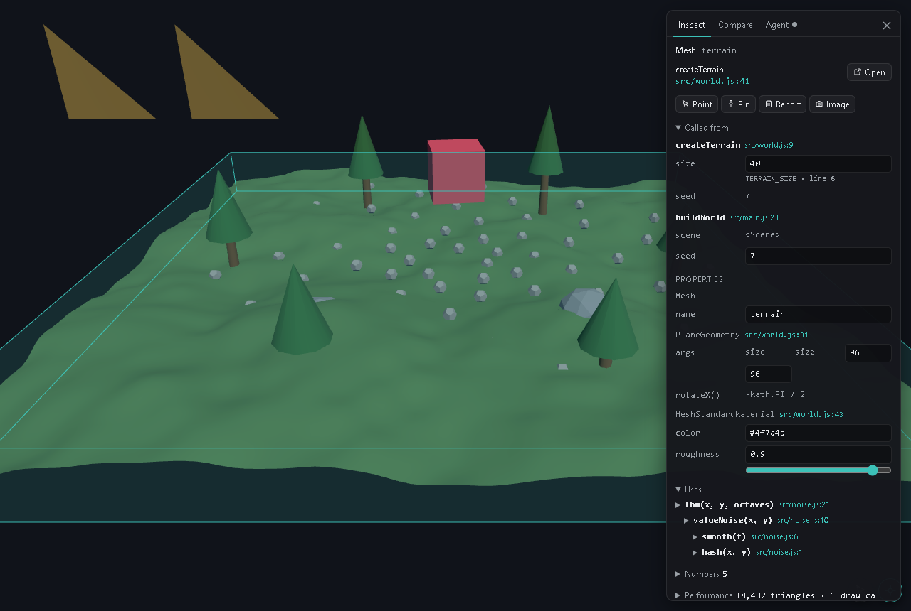
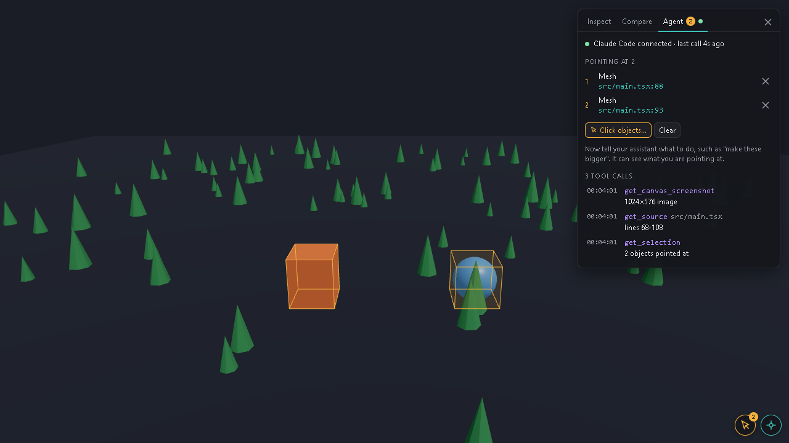

Click-to-Source 3D
Released · v0.2.0Inspect Element, but for 3D. Click any mesh in a three.js or React Three Fiber scene to see the line of code that made it, the calls that led there and the helpers it used, then change its values right there. It's an open-source Vite plugin with nothing to add to your code, and it connects to AI coding assistants like Claude Code.
npx click-to-source-3d init

Overview
What it does
